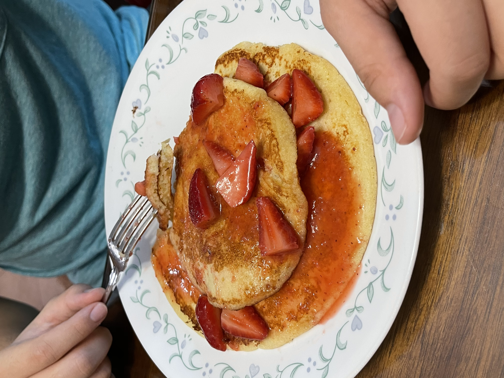

Lemon Ricotta Pancakes

Description
These pancakes are some of the best around. They are light, fluffy, and
absolutely scrumptious
Ingredients
For Strawberry Coulis:
- 1 quart of Strawberries, topped and quartered
- 1/2 cup of Sugar
- 1/2 cup of Orange Juice
For Pancakes:
- 2 cups of all-purpose flour(sifted)
- 3/4 cups of Sugar
- 1/2 Tsp salt, plus a pinch for egg whites
- 1 heaping teaspoon Baking Powder
- 4 eggs, separated
- 1 heaping cup of Ricotta cheese
- 3/4 cup of milk
- 2 meyer lemons, zested and juiced
- Butter for cooking the pancakes
- Powdered sugar, for dusting
Steps
For Strawberry Coulis:
- Toss the Strawberries with the Sugar and Orange Juice
- Cover and let sit at room temperature for at least 30 minutes
-
After berries and sugar have macerated and become very juicy and remove
1/2 of the berry mixture
- Put the removed berry mixture in a food processor and puree
-
Add puree back to rest of berries and mix together and reserve till
ready to use
For Pancakes:
- Sift together all dry ingredients in a large bowl
-
In another bowl combine the egg yolks, ricotta, milk, lemon zest and
juice, and mix until it becomes homogeneous
-
Make a well in the dry ingredients, add the wet ingredients to the well
and whisk until combined
- Preheat a griddle
-
In another bowl, using whisk or an electric mixer, beat the egg whites
with a pinch of salt to stiff peaks
-
Fold the egg whites into the flour mixture in thirds quickly and gently
so pancakes are light and fluffy
-
Melt butter on griddle and spread with paper towel to take away excess
butter
-
Spoon or ladle pancake batter on griddle to desired size of pancake
-
When the top of the pancake is full of holes, like bubbles, flip it
- Make sure pancakes cook to golden brown
-
Place pancakes on serving plates and top with Strawberry Coulis and
garnish with powdered sugar